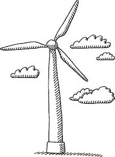

Minder uitstoot
Om klimaatverandering te beperken moeten we de uitstoot van broeikasgassen verminderen. Dat betekent vooral dat we minder fossiele brandstoffen moeten gebruiken en overstappen op duurzamere vormen van energie.
Duurzame energie
Voorbeelden van duurzame energie zijn zonne-energie, waterkracht en windenergie. Deze energiebronnen veroorzaken tijdens het opwekken van stroom veel minder uitstoot dan steenkool, olie en gas. Aardwarmte kan ook een duurzame oplossing zijn, omdat warmte uit de aarde gebruikt wordt voor verwarming en energie.

Besparen en aanpassen
- Huizen beter isoleren, zodat minder warmte verloren gaat
- Minder energie verbruiken door bewust om te gaan met apparaten en verlichting
- Meer reizen met fiets, trein of openbaar vervoer
- Minder verspillen en meer hergebruiken of recyclen
- Bewuster omgaan met voeding en consumptie
Oplossingen gaan niet alleen over techniek, maar ook over gedrag. Hoe meer mensen duurzamere keuzes maken, hoe groter het effect. Daarom zijn kennis, bewustwording en samenwerking belangrijk.
Toekomst
Er is niet één oplossing die alles meteen oplost. Wel kunnen veel kleine en grote maatregelen samen de opwarming van de aarde beperken. Zo kunnen mensen de schade verkleinen en zich beter aanpassen aan veranderingen die al bezig zijn.